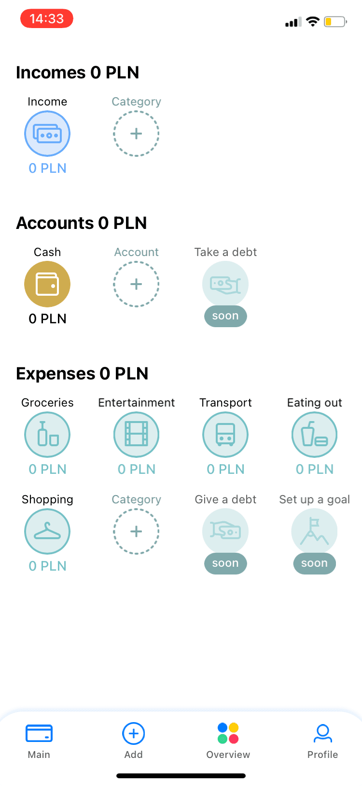
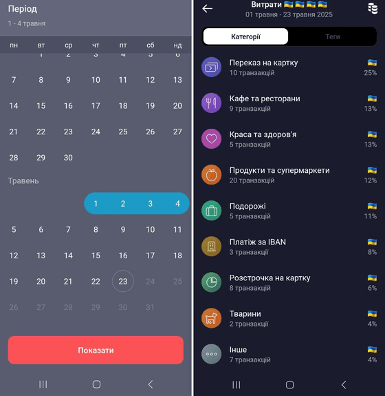
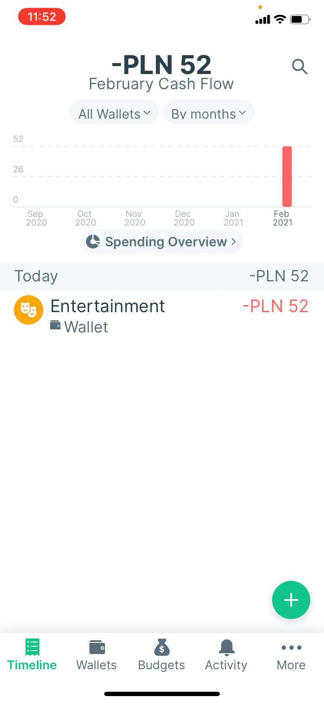
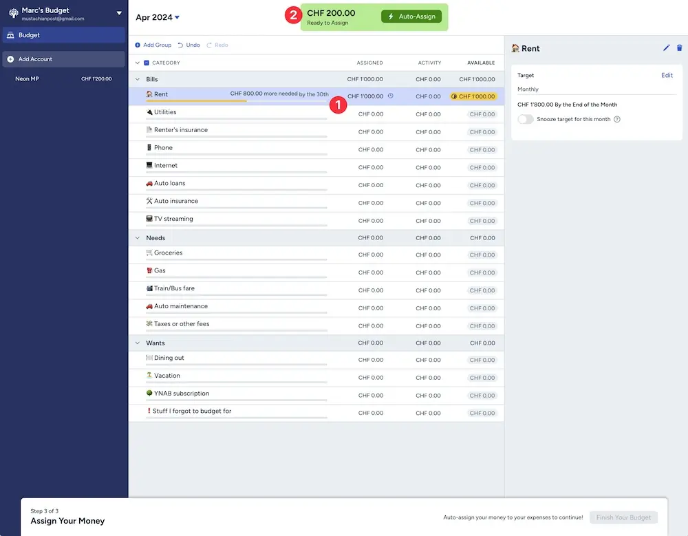

Огляд ринку особистих фінансів, Jobs To Be Done та вибір UX-патерну для Бабосіка.
| Продукт | Що добре | Що не так |
|---|---|---|
| Monobank | Зручна категоризація, живий дизайн | Немає кастомних категорій, обмежена аналітика |
| YNAB | Потужна система бюджетів | Складно, дорого, англійська |
| CoinKeeper | Симпатичний UI | Застарів, мало автоматизації |
| Notion (самописний) | Гнучкість | Немає автоімпорту, треба робити руками |
| Spendee | Мультибанк, дизайн | Платне, не локалізоване для UA |



